浅谈小程序
在 2016 年的「微信公开课 Pro」演讲中，微信事业群总裁张小龙这样描述了小程序的前景与未来：
" 小程序是一种不需要下载安装即可使用的应用，它实现了应用 “触手可及” 的梦想，用户扫一扫或者搜一下即可打开应用。也体现了 “用完即走” 的理念，用户不用关心是否安装太多应用的问题。应用将无处不在，随时可用，但又无须安装卸载 "。
小程序刚发布的时候要求压缩包的体积不能大于 1M，否则无法通过，在 2017 年 4 月做 了改进，由原来的 1M 提升到 2M；
2017 年 1 月 9 日 0 点，万众瞩目的微信第一批小程序正式低调上线。
而在 2020年的「WWDC 苹果全球开发者大会」中，轻应用则被作为 iOS 14 的主要功能进行强调与推介：
App Clip 就是一种无需用户在 iPhone 或 iPad 上安装完整的应用程序，就可以访问使用该应用程序的部分功能的轻量级应用，它们专注于处理简单快速的任务。
不论是张小龙对「微信小程序」略带文艺的描述，还是在 WWDC 上对于「轻应用」在 iOS 生态中的地位描述，我们都能大抵能理解小程序诞生的初衷。而如果我们把时间从这两场发布会的转至今日，却会发现小程序早已不再局限于「用完即走」与「快速打开」，各式各样的小程序已呈现百花齐放的状态，不论是工具小程序，内容小程序，交易小程序，直播小程序，各种类型应有尽有。
不妨让我尝试用自己的工作日常举例，早上出门上班，我会打开「腾讯乘车码」扫描地铁场所码，并把健康码给地铁安检查看，临近中午11点 30分，我会用「美团」或「饿了么」为自己订一份工作餐，吃完午饭后我会打开「动物餐厅」看看小猫咪又赚了多少小鱼干，下午会议时使用「腾讯文档」查看会议纪要，快下班的时候用「叮咚买菜」购置晚饭所需的食材，晚上回家做饭时，用「懒饭 App」看看想吃的番茄肥牛饭怎么做。
时至今日，当我们说到小程序时，也不仅仅在特指微信小程序，各式各样的平台都纷纷推出了自己专属的小程序平台，不论支付宝、字节跳动、美团还是百度等其他互联网大厂，都纷纷推出了自己专属的小程序平台，且都基于自己的生态业务，为小程序提供流量进行支持，希望用户与开发者能够选择自有平台中的小程序进行开发。
什么样的应用适合使用小程序开发
虽然小程序市场时至今日依然是一片蓝海，但我想也不是所有应用「都可以，都应该」使用小程序开发的。
基于我们的经验与积累来说，符合「逻辑简单，使用低频，对性能要求不极致」的应用场景，更加适合使用小程序进行研发。
逻辑简单 ：是指应用的操作逻辑并不十分复杂，各类生活服务（如打车，订餐，查地图与导航等等）都需要给用户提供简单清晰的操作逻辑，而这一类也天然的符合起初小程序「用完即走」的定义，因此十分符合使用小程序研发。一些逻辑复杂的应用场景想要通过小程序进行适配，就可能会面临更多的设计与研发困难，同时在性能和体验也可能会面对更多需要解决的问题。
使用低频 ：是指小程序的使用频率不应该太高，比如社交类的钉钉或飞书，金融类的掌上生活或浦大喜奔，媒体类的网易云音乐或斗鱼都不太适合使用小程序进行重新设计。对于用户使用的频率较高的应用来说，直接打开应用进行体验的步骤肯定最快的，此外由于某些行业的特殊性质（比如具备交易，支付等能力）要求，对于安全性与保密性的首选风险判断原则，也不宜使用常见的小程序进行设计。
对性能要求不极致 ：是指由于小程序始终存在于某个独立应用（也被称为宿主应用）中，考虑到目前的性能与研发所限制，暂时不太适合开发对于这两者有更高要求的移动应用。比如把原神，王者荣耀这样的游戏应用通过小程序进行重新设计，在目前来说肯定是不现实的。
当然，随着相关研发实力的增强与产业生态的逐渐补充，也有越来越多的「不可能」变为了「可能」，比如华西证券的「华彩人生」，浦发银行的「浦大喜奔」，某省的移动警务平台等客户都选择使用小程序容器方案进行落地实现
小程序与H5，原生应用有何区别？
很多朋友在了解小程序技术的时候，都会有这样的疑惑“到底与 H5，原生应用”这些技术相比，小程序具有哪些优势与劣势呢？
H5 移动应用
我们常说的 H5 其实也通常可以被视为一种 Web App，相比于我们在桌面端浏览器中打开的网页，主要是增加了一些响应式的设计与交互优化，从而使得这些网页更适合在移动端的浏览器中显示运行。既然是网页应用，那依然是基于 JavaScript，CSS 和 HTML 进行实现的，由于是基于各类前端技术栈进行实现，最大的好处就是快速、简单、方便，且有各种技术资料可以参考。
同样，H5 的缺点与优点也是并存的，比如由于技术已经很成熟了，对于前端经验欠缺的新人来说，面对各式各样的框架，模块、任务管理工具，UI 库可能会出现无从下手的问题；此外相比于原生应用，对于系统权限的获取（比如数据缓存能力，网络通信状态等）都显得比较鸡肋，当低性能的设备加载包含复杂逻辑的页面时，会出现明显的卡顿与延迟问题。
原生应用
原生应用也被叫做 Native App，相比于 H5 应用通过前端三大件进行实现不同，原生应用主要会采用 iOS 与 Android 的专有语言 Object-C（或 Swift），Java（或 Kotlin）进行实现，大多我们所常见的国民应用，比如微信，支付宝等都属于这种原生应用。
既然被叫做「原生应用」，就像操作系统的亲儿子一样，天然在性能与体验上具备优秀的潜质，也有组件库丰富，接口支持完善等各种优势特点。但原生应用最大的缺陷就是不能跨平台研发，以目前的主流市场为例，必须要支持 iOS 与 Android 两个主流平台。
混合应用
混合应用一般被称为 Hybrid App。简单来说，混合应用就是将原生功能封装成对应的 JS 接口，在前端使用 H5 来开发对应的 App （即 H5 作为内容+原生应用作为壳） ，看上去虽然是一个移动原生应用整体，但实际的页面还是网页，一套代码可以生成 iOS 与 Android 两种安装包，开发成本较低。
我们常见的淘宝，京东等应用由于更新与优化节奏都十分快速，为了更好的响应「贴近用户」的目标，应用中有的功能通过原生 Native 实现，有的功能则通过 H5 页面进行实现，这种应用就属于我们所说的混合应用。
小程序
严格意义上来说，小程序并不属于以上 3 种应用的任何一种。小程序主要通过 JavaScript 与 CSS 这种常见的前端技术进行开发，但又没有完全使用 HTML 进行实现，在不同的操作系统中，JavaScript 代码分别运行在 iOS 的 JavaScriptCore 与 Android 的 JSCore 中，各家小程序平台或多或少都有一部分自研的核心，因此渲染视图层的组件也有所不同。
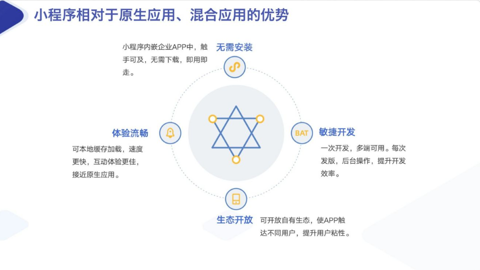
相比「 H5 移动应用」与「 移动原生应用」，小程序具备如下优势：
具备跨平台的能力，一套代码可以在 iOS 与 Android 两个平台中运行；
远超过 H5 的体验（支持本地缓存，Webview，有丰富的组件与支持库）；
不需要下载和安装，不想用了也不需要卸载；
可以避免 DOM 泄露（不使用常用的 window 对象与 document 对象）；
与 App 相比，学习门槛和开发成本都比较低，可以快速上手；
相比 H5，小程序受限微信运营规范，不像H5页面那么灵活。但它也可以做一些 H5 做 不了的事情，比如消息订阅，直接转发消息给好友等；
常见的小程序开发框架有哪些
以主要的小程序开发框架举例，腾讯云社区的「极乐君」将不同平台下小程序支持的力度整理在一张表中：
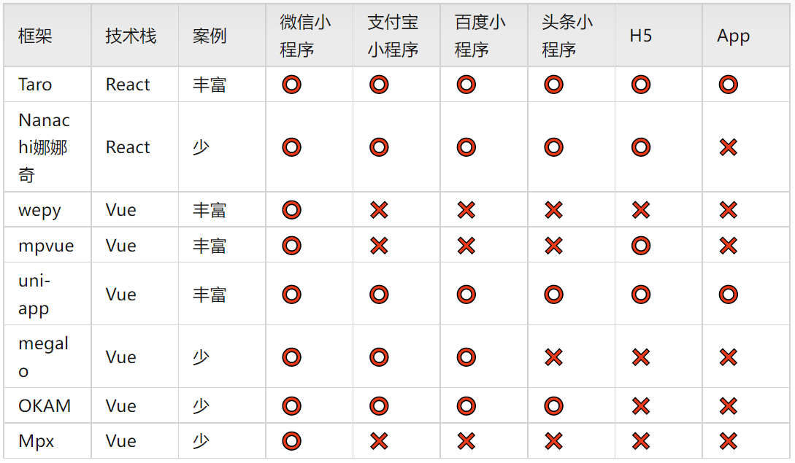
小程序启动机制
小程序启动会有两种情况 ：
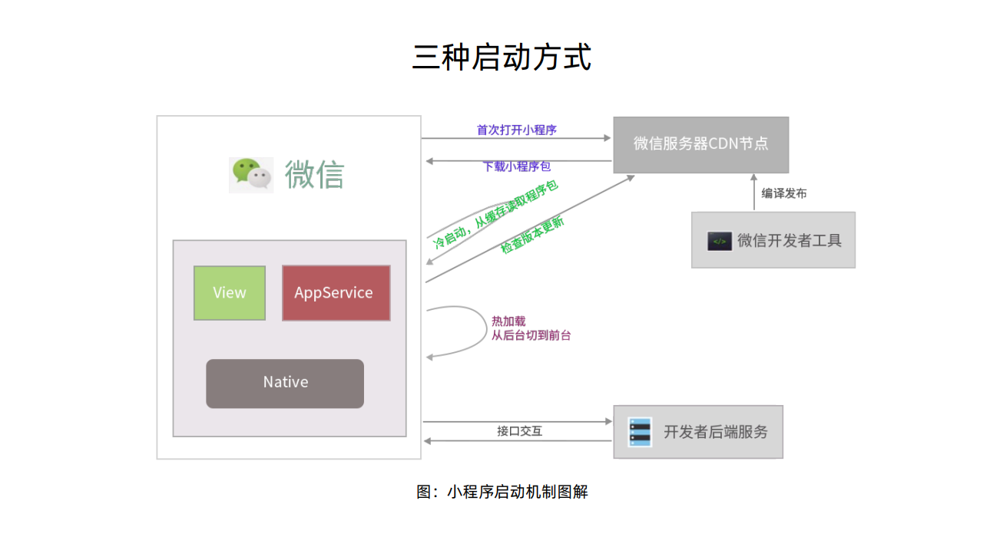
与小程序冷、热启动相关的，是小程序的两种状态 ：
为了安全和管控，小程序使用双线程 执行：视图线程和逻辑线程
View 视图线程
App Service 逻辑线程
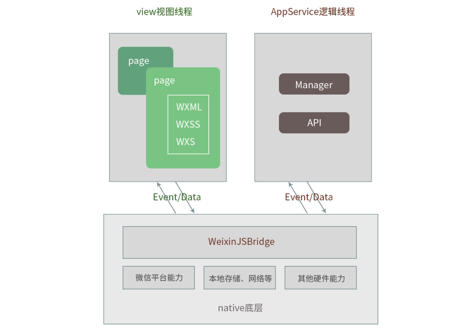
扩展问题：视图持续更新是怎么实现的？
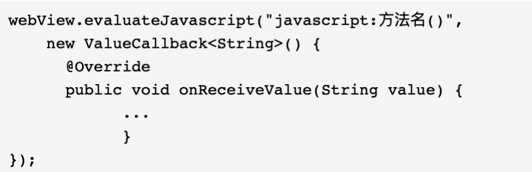
扩展问题：使用 setData 可能遇到哪些问题？
扩展问题：微信为什么要造一个 WXS？
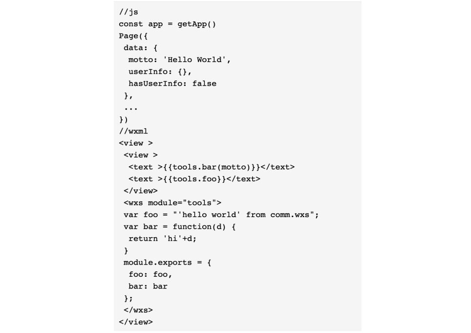
视图线程
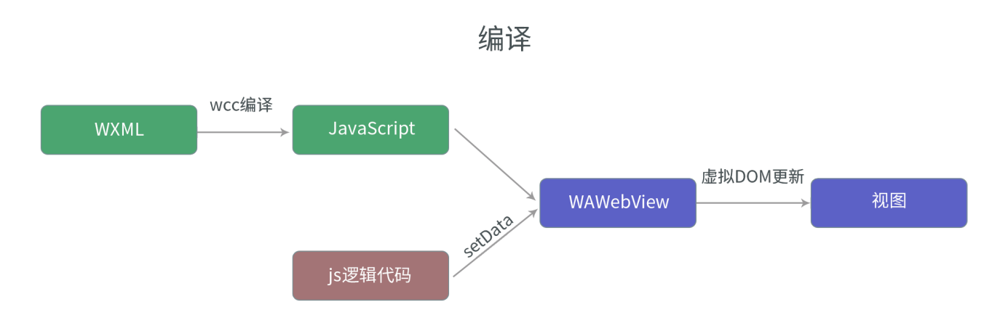
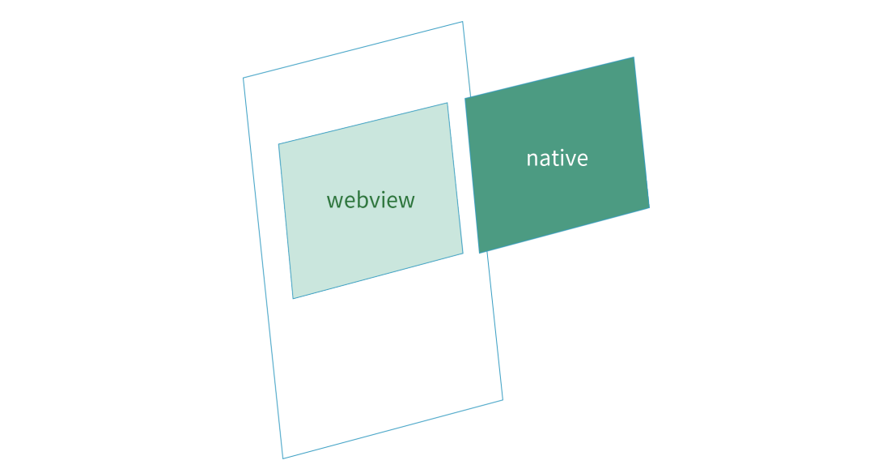
逻辑线程
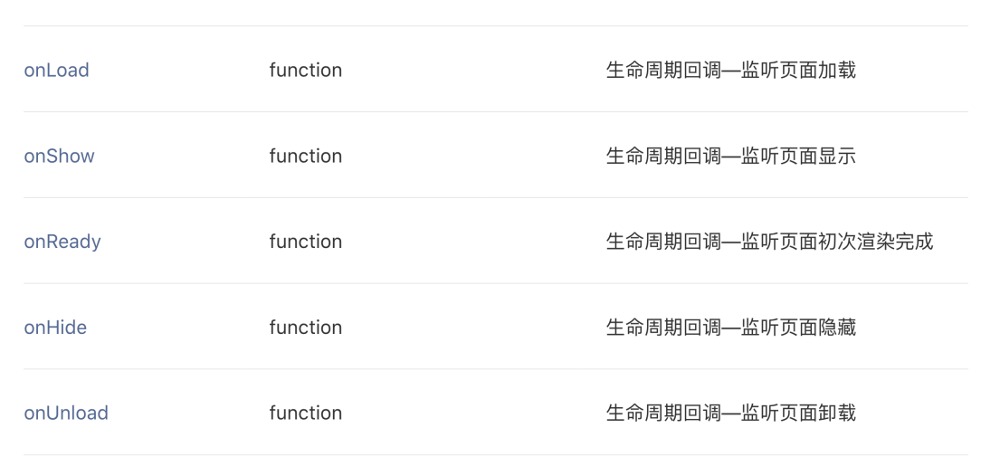
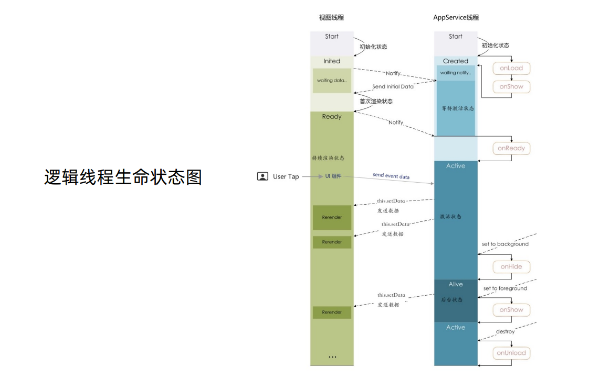
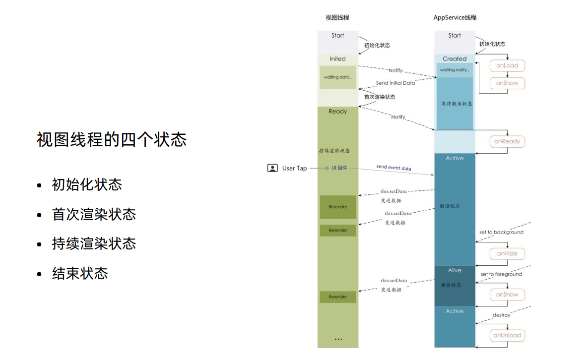
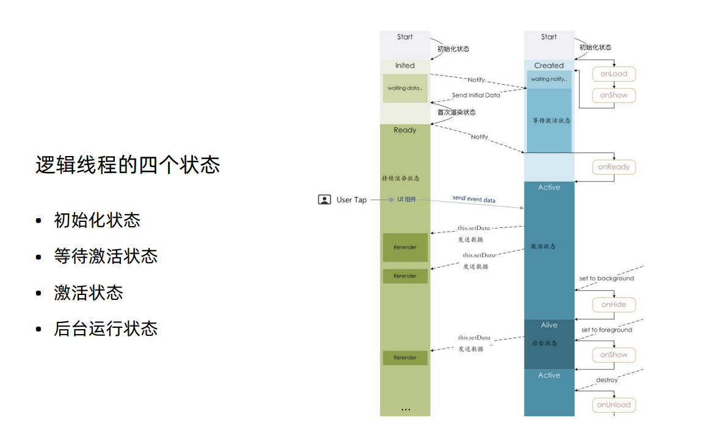
小程序开发环境
1、微信文档
2、微信开发工具下载
3、注册小程序账号
小程序特点
没有 DOM
组件化开发：具备特定功能效果的代码集合
体积小，单个压缩包体积不能大于 2M，否则无法上线
小程序的四个重要的文件
小程序适配方案: rpx (responsive pixel 响应式像素单位)
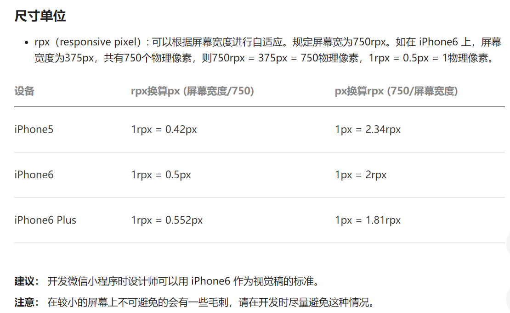
小程序配置
全局配置
作用： 用于为整个应用进行选项设置
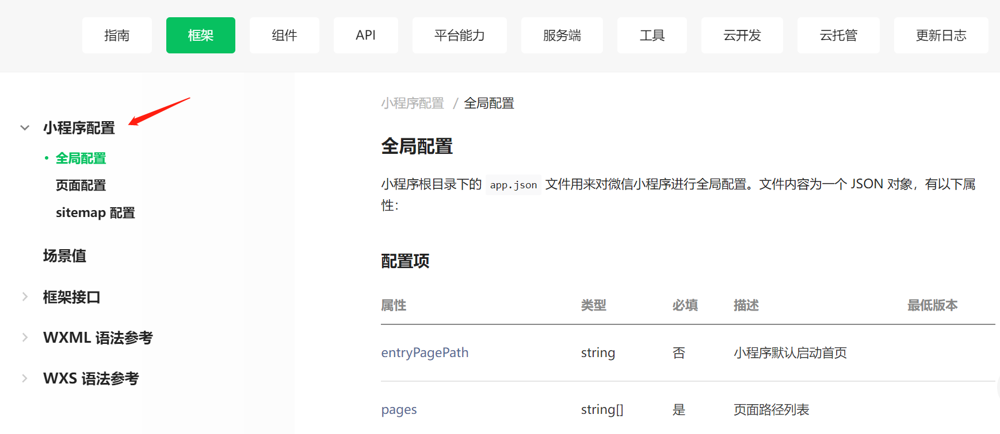
页面配置
配图参上作用：用于为指定的页面进行配置
注：页面配置的优先级高于全局配置
sitemap 配置
配图参上作用：配置其小程序页面是否允许微信索引
小程序基础
框架接口
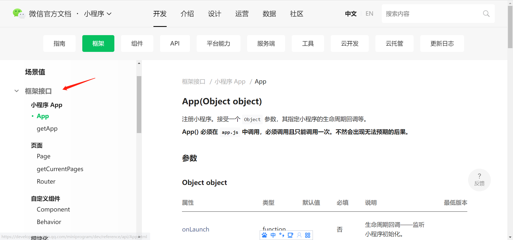
App
全局 app.js 中执行 App()
生成当前应用的实例对象
getApp()获取全局应用实例
Page
页面.js 中执行Page()
生成当前页面的实例
通过getCurrentPages() 获取页面实例
事件系统
忘了写 ~
WXML语法
具体看官方文档 ~
ToDoList
todolist.wxml
1 2 3 4 5 6 7 8 9 10 11 12 13 14 15 16 17 18 19 20 <view class ="container" > <view class ="header" > <input type ="text" class ="header-input" bindinput ="inputHandler" value ='{{text.title?text.title:""}}' /> <button type ="primary" size ="mini" bindtap ="add" > 添加</button > </view > <view class ="show" wx:if ="{{todoList.length > 0}}" > <view wx:for ="{{todoList}}" wx:key ="id" > {{item.id + 1}}. {{item.title}} <button type ="warn" size ="mini" bindtap ="del" data-index ="{{index}}" > 删除</button > </view > </view > <view wx:else > 暂无待办事项</view > </view >
todolist.js
1 2 3 4 5 6 7 8 9 10 11 12 13 14 15 16 17 18 19 20 21 22 23 24 25 26 27 28 29 30 31 32 33 34 35 36 37 38 39 40 41 42 43 44 Page ({ data : { todoList : [ {id : 0 , title : '吃饭' }, {id : 1 , title : '睡觉' }, {id : 2 , title : '打豆豆' }, ], text : '' }, inputHandler (e ){ this .setData ({ text : { id : this .data .todoList .length , title : e.detail .value } }) }, add ( this .setData ({ todoList : [...this .data .todoList , this .data .text ], text : '' }) }, del (e ){ var index = e.target .dataset .index this .data .todoList .splice (index, 1 ) this .setData ({ todoList : this .data .todoList }) } })
Tab
tab.wxml
1 2 3 4 5 6 7 8 9 <view class ="container" > <view class ="tab {{index == current ? 'active' : ''}}" bindtap ="changeCurrent" data-index ="{{index}}" wx:for ="{{tabList}}" wx:key ="*this" > <text > {{item}}</text > </view > </view >
tab.js
1 2 3 4 5 6 7 8 9 10 11 12 13 14 15 16 17 Page ({ data : { tabList : ["首页" , "购物车" , "我的" ], current : 0 }, changeCurrent (e ){ console .log (e.currentTarget .dataset .index ) this .setData ({ current : e.target .dataset .index }) } })
target 和 currentTarget的区别？
target 是触发该事件的源头组件，而 currentTarget 则是当前事件所绑定的组件
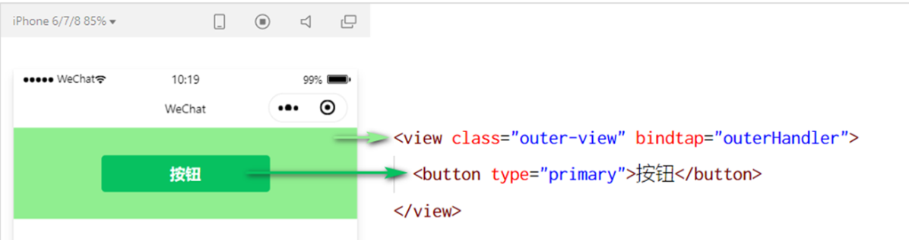
点击内部的按钮时，点击事件以冒泡的方式向外扩散，也会触发外层 view 的 tap 事件处理函数。
此时，对于外层的 view 来说：
e.target 指向的是触发事件的源头组件，因此，e.target 是内部的按钮组件
e.currentTarget 指向的是当前正在触发事件的那个组件，因此，e.currentTarget 是当前的 view 组件
WXSS语法
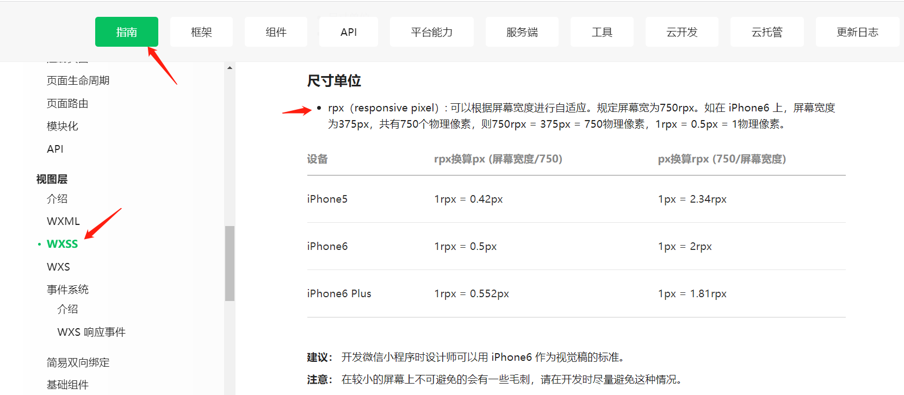
WXS语法
具体看官方文档 ~
这里补充一点，为什么有了js还要设计wxs？
1、 WXS 的基础类库：
WXS只提供给开发者5个基础类库，分别是 console，Math，JSON，Number，Date，以及一些常用的全局变量和全局函数，数量不多，但已经能满足基本的数据操作要求，而对于复杂的数据操作，比如类定义和继承等，还是需要依靠逻辑层的 JS 脚本完成。
2、数组遍历
WXS 里，遍历数组只能通过for实现，而JS中的for in和for of不被支持，对于需要循环处理数据的场景，也可以通过数组的forEach方法实现遍历：
1 2 3 4 var ary = [0 , 1 , 2 ];ary.forEach (function (i ) { console .log (i);})
3、 变量类型判断
由于WXS先天不支持使用 Array 对象，因此我们平常用于判断数组类型变量的语句[] instanceof Array也就不能使用了，而typeof []的输出结果是"object"，并不能满足实际的开发要求。所幸我们还可以使用变量的 「constructor」属性进行类型判断：
1 [].constructor === Array
4、性能差异
小程序的架构分成了逻辑层和视图层，WXS 与JavaScript还有一个差异在于，它与WXML一同们于视图层，运行于同一个线程内，因此减少了跨线程通信的开销。这也是我们之所以优先采用WXS处理数据的原因之一
5、平台差异
小程序在Android上，使用V8引擎解析和渲染 JavaScript; 而在iOS上，则是使用 JavaScriptCore，这两者在解析性能的表现上差异比较大，相对来说 V8 的性能比 JSC 要好得多，那么在 IOS 的小程序中，使用脱离 JavaScript 环境的 WXS，就会使性能有更多的提升，这也是WXS文档中提及 “在 iOS 设备上小程序内的 wxs 会比 javascript 代码快 2 ~ 20 倍” 的具体原因
dateFormat.wxml
1 2 3 4 5 <wxs src ='./dateFormat.wxs' module ="aaa" > </wxs > <view class ="container" > {{aaa(time)}} </view >
dateFormat.js
1 2 3 4 5 Page ({ data : { time : 1646372333761 , } })
dateFormat.wxs
1 2 3 4 5 6 7 8 9 10 function dateFormat (time ) { var newTime = getDate (time) var year = newTime.getFullYear () var month = newTime.getMonth () + 1 var date = newTime.getDate () return year + '-' + month + '-' + date } module .exports = dateFormat
Search
search.wxml
1 2 3 4 5 6 7 8 <wxs src ='./search.wxs' module ="searchList" > </wxs > <view class ="search-box" > <input type ="text" class ="search-input" bindinput ="getKeyWords" /> <view wx:for ="{{searchList(list, keyWords)}}" wx:key ="*this" > {{item}} </view > </view >
search.js
1 2 3 4 5 6 7 8 9 10 11 Page ({ data : { list : ['abc' , 'acd' , 'cdb' , 'xyz' , 'zxe' , 'qwe' , 'amd' , 'cmd' ], keyWords : '' }, getKeyWords (e ){ this .setData ({ keyWords : e.detail .value }) } })
search.wxs
1 2 3 4 5 6 7 function search (list, keyWords ) { return list.filter (function (item ) { return item.indexOf (keyWords) > -1 }) } module .exports = search
数据请求
request.wxml
1 2 3 4 <view class ="container" > <image class ="item" mode ="widthFix" wx:for ="{{swiperList}}" wx:key ="*this" src ="{{item.imgUrl}}" > </image > </view >
request.js
1 2 3 4 5 6 7 8 9 10 11 12 13 14 15 16 Page ({ data : { swiperList : [] }, onLoad : function (options ) { wx.request ({ url : 'https://www.fastmock.site/mock/d4c75f77a8eef86dc58b3fced5bf604e/laoxu/api/getData' , success : (result ) => { const {data :{data}} = result this .setData ({ swiperList : data.swiperList }) }, }) } })
request.wxss
1 2 3 4 5 6 7 8 9 .container { display : flex; flex-direction : column; align-items : center; } .item { margin-top : 20 rpx; border-radius : 12 rpx; }
实战场景
1 2 3 4 5 6 7 8 9 10 11 12 13 14 15 16 17 18 19 20 21 22 23 24 25 26 27 28 29 30 31 32 33 34 35 36 37 38 login (e ) { ... const requestLoginApi = (code ) => { wx.request ({ url : 'http://localhost:3000/user/wexin-login2' , ... success (res ) { let token = res.data .data .authorizationToken wx.setStorageSync ('token' , token) onUserLogin (token) } }) } const onUserLogin = (token ) => { getApp ().globalData .token = token ... } wx.checkSession ({ success ( let token = wx.getStorageSync ('token' ) if (token) onUserLogin (token) }, fail ( wx.login ({ success (res0 ) { if (res0.code ) { requestLoginApi (res0.code ) } } }) } })
小程序组件
扩展问题：icon组件介绍及如何自定义实现图标?
1 2 3 4 5 <icon type="success" size="30px" color="green" /> type类型范围:['success' , 'success_no_circle' , 'info' , 'warn' ,'waiting' ,'cancel' ,'download' , 'search' , 'clear' ] <icon type="success" size="100rpx" /> <icon style ="background:grey;" type ="success" size ="100rpx" />
扩展问题：图标能否与文本同行，放在段落中?
扩展问题：实现icon图标的方案有哪些，原理是什么?
1 2 3 4 5 6 7 .sprite_icon { display : block; width : 80px ; height : 80px ; background : url ("https://cdn.nlark.com/..1bd0.png" ) -180px -310px ; }
1 2 3 4 5 6 7 8 9 10 11 12 13 14 15 16 .icon-close { display : inline-block; width : 17px ; height : 2px ; background : red; transform : rotate (45deg ); } .icon-close ::after { content : '' ; display : block; width : 17px ; height : 2px ; background : red; transform : rotate (-90deg ); }
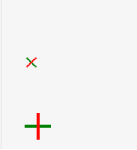
1 2 3 4 5 6 7 8 9 10 11 12 13 14 15 16 17 18 19 20 21 22 23 @font-face { font-family : 'iconfont' ; src : url ('//at.alicdn.com/t/font_1716930_3m30jvz589y.eot' ); src : url ('//at.alicdn.com/t/font_1716930_3m30jvz589y.eot?#iefix' ) format ('embedded-opentype' ), url ('//at.alicdn.com/t/font_1716930_3m30jvz589y.woff2' ) format ('woff2' ), url ('//at.alicdn.com/t/font_1716930_3m30jvz589y.woff' ) format ('woff' ), url ('//at.alicdn.com/t/font_1716930_3m30jvz589y.ttf' ) format ('truetype' ), url ('//at.alicdn.com/t/font_1716930_3m30jvz589y.svg#iconfont' ) format ('svg' ); } .iconfont { font-family : "iconfont" !important ; font-size : 16px ; font-style : normal; -webkit-font-smoothing : antialiased; -moz-osx-font-smoothing : grayscale; } .icon-sun :before { content : "\e603" ; color : red; font-size : 20px ; } <icon class="iconfont icon -sun"></icon >
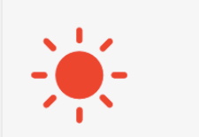
1 2 3 4 5 6 7 8 9 www.sojson .com /image2base64.html .svg-icon { display : block; width : 200px ; height : 200px ; background-repeat : no-repeat; background : url ("data:image/svg+xml;base64,PHN...Zz4=" ); } <icon class="svg-icon "></icon >
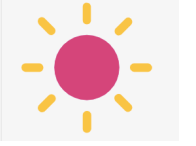
拓展问题：有时候真机上显示icon空白，不正常显示的问题
1 有人觉得可能是因为url导致的 因为字体文件的url没有在安全域名中定义 访问被拒绝了 其实不是 在wxss中加载图片及字体文件资源是允许使用外域地址的 如果图标是自定义实现的 要检查下机型及嵌入的字体文件类型 很有可能是兼容性引起的 在小程序中推荐使用woff和ttf格式的字体 如果使用的是这俩问题依然存在的话 可以考虑SVG格式的数据嵌入
拓展问题：weui组件库里的icon组件的图标如何取出来，保存到本地? sketch设计稿
progress
实现简易下载效果
wxml
1 2 3 4 5 6 7 8 9 10 11 12 <view class ="progress-container" > <view class ="progress-box" > <progress class ="mt" percent ='{{percentValue}}' border-radius ='50' stroke-width ='10' active active-mode ="forwards" bindactiveend ='complete' > </progress > </view > <view class ="icons" > <icon class ="progress-cancel" type ="cancel" bindtap ="cancel" > </icon > <icon class ="progress-cancel" type ="download" bindtap ="download" > </icon > </view > </view > <view wx:if ="{{isShow}}" > 下载完成</view > <view wx:if ="{{isShow2}}" > 暂停下载</view >
js
1 2 3 4 5 6 7 8 9 10 11 12 13 14 15 16 17 18 19 20 21 22 23 24 25 26 27 28 29 30 31 32 33 34 35 36 37 38 39 40 41 42 43 44 45 46 47 48 49 50 51 52 Page ({ data : { percentValue : 0 , isShow : false , isShow2 : false }, complete (e ) { if (e.detail .curPercent >= 100 ) { this .setData ({ isShow : true }) } }, cancel ( clearInterval (this .timeId ) this .setData ({ isShow2 : true }) }, download ( clearInterval (this .timeId ) this .setData ({ isShow2 : false }) this .timeId = setInterval (() => { if (this .data .percentValue >= 100 ) { clearInterval (this .timeId ) return } this .setData ({ percentValue : this .data .percentValue += 10 }) }, 500 ) }, onReady ( this .timeId = setInterval (() => { if (this .data .percentValue >= 100 ) { clearInterval (this .timeId ) this .setData ({ isShow2 : false }) return } this .setData ({ percentValue : this .data .percentValue += 10 }) }, 500 ) } })
拓展问题：progress 已产生的进度条如何设置圆角?
1 2 3 4 5 6 7 8 <progress border-radius ="5 " percent="20 " show-info /> .wx-progress-inner-bar { width : 0 ; height : 100% ; } .wx-progress-inner-bar { border-radius : 5px ; }
扩展问题：如何实现环形进度条？
扩展问题：已经加载完的进度条progress,如何点击某个按钮让它重新加载呢?
1 2 3 4 5 6 7 8 9 10 11 12 13 14 15 16 17 18 this .setData ({ percentValue : 0 }); if (wx.canIUse ('nextTick' )) { wx.nextTick (() => { this .setData ({ percentValue : 100 }); }); } else { setTimeout (() => { this .setData ({ percentValue : 100 }); }, 17 ) } onTapReloadBtn (e ){ this .setData ({ percentValue : 0 }) this .setData ({ percentValue : 50 }) }
扩展问题：progress石边进度的百分比数字,它的颜色怎么设置?
1 2 3 4 5 6 <view class ="gap" > progress 右边进度的百分比数字，它的颜色怎么设置？</view > <progress percent ="40" stroke-width ="5" show-info style ="color:red" /> .wx-progress-info { color: red; }
rich-text
rich-text.wxml
1 2 3 4 5 6 7 8 9 10 11 12 13 <view class ="container" > <rich-text space ="emsp" nodes ="{{nodes}}" bindtap ="tap" > </rich-text > <view > =====================</view > <view class ="page-body" > <view class ="page-section" > <view class ="page-section-title" > 通过HTML String渲染</view > <view class ="page-content" > <rich-text nodes ="{{htmlSnip}}" > </rich-text > </view > </view > </view > </view >
rich-text.js
1 2 3 4 5 6 7 8 9 10 11 12 13 14 15 16 17 18 19 20 21 22 23 24 25 26 27 28 29 30 31 32 33 34 35 36 37 38 39 40 41 42 43 44 45 46 47 48 49 50 51 52 53 54 55 56 57 58 59 60 61 62 63 64 65 66 67 68 69 70 71 72 73 74 75 76 77 78 79 80 81 82 83 84 85 86 87 88 89 90 91 92 93 94 95 96 97 Page ({ data : { nodes : [{ name : 'div' , attrs : { class : 'div_class' , style : 'line-height: 20px;padding:20px;' }, children : [{ type : 'text' , text : '⼩程序实践' }, { name : 'img' , attrs : { src : 'https://cdn.cnbj1.fds.api.mi-img.com/mi-mall/dba375885a62e4436a6b969d74bad683.jpg?thumb=1&w=1533&h=575&f=webp&q=90' , class : 'img' } }, { name : 'img' , attrs : { src : 'https://cdn.cnbj1.fds.api.mi-img.com/mi-mall/b915dfd62177e40b5a9c760e90250cc0.jpg?thumb=1&w=1533&h=575&f=webp&q=90' , style : 'width:100%' , class : 'img' } }, { name : 'img' , attrs : { src : 'https://cdn.cnbj1.fds.api.mi-img.com/mi-mall/0ba9f03efa17f17ca26cebf9364c1ff9.jpg?thumb=1&w=1533&h=575&f=webp&q=90' , style : 'width:100%' }, }] }], urls : [], htmlSnip : `<div class="div_class"> <h1>Title</h1> <p class="p"> 渲染出来了 ~ </p> </div> ` }, onReady ( function findUrl (nodes ) { let urls = [] nodes.forEach (item => if (item.attrs ) { for (const key in item.attrs ) { if (key == 'src' ) { urls.push (item.attrs [key]) } } } if (item.children ) { urls = urls.concat (findUrl (item.children )) } }) return urls } this .data .urls = findUrl (this .data .nodes ) }, tap (e ) { let index = Math .floor (e.detail .y / 134 ) let urls = this .data .urls wx.previewImage ({ current : urls[index], urls : urls }) } })
拓展问题：如何预览保存rich-text富文本组件中的图片？
思路：如果可以使用单击事件，以单击事件的事件源currentTarget获取到目标组件，再判断组件是不是image，如果是就取它的src属性就能实现预览和下载，但是rich-text中所有节点都屏蔽了单击事件，所以此方法是行不通的，但我们仍然可以添加tap事件，在事件函数中使用wx.previewImage接口预览图片，然后选择需要的图片下载，需要注意的是， 预览之前我们需要遍历rich-text中nodes数据，将所有图片地址预先取出来，当单击rich-text时，触发预览，在事件句柄中，事件对象是一个TouchEvent对象，使用其pageX、pageY属性，判断用户大概点击了什么位置，如果以位置可以判断出是哪一张，就将其作为wx.previewImage的第一个参数传进去，如果不能，就选第一张即可
拓展问题：在富文本rich-text里面怎么插入ad 广告标签？如何将HTML文本直接解析呈现？
扩展问题：如何把 view 上的内容绘制在画布上，生成一张海报?
思路：view不能直接转绘到画布上，如果想生成海报，一种可行的办法是这样
用wx.createCanvasContext创建一个画布
在画布上绘制内容，文本，图片
wx.canvasToTempFilePath保存到本地并获取一个临时图片路径
wx.saveImageToPhotosAlbum保存临时文件到相册里
GitHub - Kujiale-Mobile/Painter: 小程序生成图片库，轻松通过 json 方式绘制一张可以发到朋友圈的图片
wxml-to-canvas
scrollview.wxml
1 2 3 4 5 6 7 8 9 10 11 12 13 14 15 16 17 18 19 20 21 22 23 24 25 26 27 28 29 30 31 32 33 34 35 36 37 38 39 40 <view class ="container" > <view style ="width: 100%;height: 300rpx;background-color: aquamarine;" > </view > <view > 纵向scroll-view</view > <scroll-view class ="sv" scroll-y ="{{true}}" bindscrolltolower ="toLoewrHandler" refresher-enabled ="{{true}}" refresher-triggered ="{{isReFresh}}" bindrefresherrefresh ="refreshHandler" > <view class ="item" wx:for ="{{swiperList}}" wx:key ="id" > <image src ="{{item.imgUrl}}" style ="width: 100vw;" mode ="widthFix" > </image > </view > </scroll-view > <view > 横向scroll-view</view > <scroll-view class ="sv2" enable-flex ="{{true}}" scroll-x ="{{true}}" bindscrolltolower ="toRightHandler" > <view wx:for ="{{swiperList}}" wx:key ="id" > <image src ="{{item.imgUrl}}" style ="width: 100vw;" mode ="widthFix" > </image > </view > </scroll-view > </view >
scrollview.js
1 2 3 4 5 6 7 8 9 10 11 12 13 14 15 16 17 18 19 20 21 22 23 24 25 26 27 28 29 30 31 32 33 34 35 36 37 38 39 40 41 42 43 44 45 46 47 48 49 50 51 52 53 54 55 56 57 58 59 60 61 62 63 64 65 66 Page ({ data : { swiperList : [], isReFresh : false }, toRightHandler ( wx.request ({ url : 'http://localhost:3000/getProductList' , success : (result ) => { const {data} = result this .setData ({ swiperList : [ ...this .data .swiperList , ...data ] }) } }) }, refreshHandler ( wx.request ({ url : 'http://localhost:3000/getProductList' , success : (result ) => { const {data} = result this .setData ({ swiperList : [ ...data, ...this .data .swiperList , ], isReFresh : false }) } }) }, toLoewrHandler ( wx.request ({ url : 'http://localhost:3000/getProductList' , success : (result ) => { const {data} = result this .setData ({ swiperList : [ ...this .data .swiperList , ...data ] }) } }) }, onLoad : function (options ) { wx.request ({ url : 'http://localhost:3000/getProductList' , success : (result ) => { const {data} = result this .setData ({ swiperList : data }) } }) } })
scrollview.wxss
1 2 3 4 5 6 7 8 9 10 11 12 13 14 .sv { margin-top : 20 rpx; height : 300 rpx; } .item { height : 300 rpx; } .sv2 { display : flex; } .item2 { width : 400 rpx; flex-shrink : 0 ; }
左滑删除实现
slide-view.wxml
1 2 3 4 5 6 7 8 9 10 11 12 13 14 15 16 17 18 19 20 21 22 23 24 25 26 27 28 29 30 31 32 33 34 35 36 37 38 <view class ="page-section-title" > 左侧删除1</view > <movable-area style ="width:750rpx;height:100rpx;" > <movable-view style ="width:1050rpx;height:100rpx;" direction ="horizontal" class ="max" direction ="all" > <view class ="left" > 这⾥是插⼊到组内容 1</view > <view class ="right" > <view class ="read" > 已读</view > <view class ="delete" > 删除</view > </view > </movable-view > </movable-area > <view class ="page-section-title" > 左侧删除2</view > <slide-view class ="slide" width ="750" height ="100" slideWidth ="300" > <view class ="left" slot ="left" > 这⾥是插⼊到组内容 2</view > <view class ="right" slot ="right" > <view class ="read" > 已读</view > <view class ="delete" > 删除</view > </view > </slide-view > <view class ="page-section-title" > 左侧删除3</view > <view class ="page__bd" > <view class ="weui-cells" > <mp-slideview ext-class ="slideViewClass" buttons ="{{slideButtons}}" bindbuttontap ="slideButtonTap" > <mp-cell value ="标题文字" > </mp-cell > </mp-slideview > </view > <view class ="weui-cells" > <mp-slideview buttons ="{{slideButtons}}" icon ="{{true}}" bindbuttontap ="slideButtonTap" > <view class ="weui-slidecell" > 左滑可以删除（图标Button） </view > </mp-slideview > </view > </view >
slide-view.js
1 2 3 4 5 6 7 8 9 10 11 12 13 14 15 16 17 18 19 20 21 22 var base64 = require ("../../images/base64" );Page ({ onLoad (options ) { this .widget = this .selectComponent ('.widget' ) this .setData ({ icon : base64.icon20 , slideButtons : [{ text : '普通1' , src : '/images/icon_love.svg' , }, { text : '普通2' , extClass : 'test' , src : '/images/icon_star.svg' , }, { type : 'warn' , text : '警示3' , extClass : 'test' , src : '/images/icon_del.svg' , }], }); } })
slide-view.json
1 2 3 4 5 6 7 { "usingComponents" : { "slide-view" : "miniprogram-slide-view" , "mp-slideview" : "weui-miniprogram/slideview/slideview" , "mp-cell" : "weui-miniprogram/cell/cell" } }
slide-view.wxss
1 2 3 4 5 6 7 8 9 10 11 12 13 14 15 16 17 18 19 20 21 22 23 24 25 26 27 28 29 30 31 32 33 34 35 36 37 38 39 40 41 42 43 44 45 46 47 48 49 50 51 52 53 54 55 56 57 58 59 60 61 62 63 64 65 66 67 movable-view { display : flex; align-items : center; justify-content : center; height : 100 rpx; width : 100 rpx; background : #1AAD19 ; color : #fff ; } movable-area { height : 400 rpx; width : 400 rpx; background-color : #ccc ; overflow : hidden; } .max { width : 600 rpx; height : 600 rpx; background-color : blue; } .list_item { display : flex; border-bottom : 1px solid #DEDEDE ; } .slide { border-bottom :1px solid #DEDEDE ; } .left { background-color : white; height : 100 rpx; width : 750 rpx; display : flex; flex-direction : row; color : grey; line-height : 100 rpx; padding-left : 30 rpx; } .right { height : 100 ; display : flex; direction : row; text-align : center; vertical-align : middle; line-height : 110 rpx; } .read { background-color : #ccc ; color : #fff ; width : 150 rpx; } .delete { background-color : red; color : #fff ; width : 150 rpx; } .slideViewClass .weui-cell { padding : 0 ; }
shopCar
shopCar.wxml
1 2 3 4 5 6 7 8 9 10 11 12 <wxs src ='./getSum.wxs' module ="getSum" > </wxs > <view class ="container" > <view class ="list" wx:for ="{{productList}}" wx:key ="id" > <checkbox checked ="{{item.isChecked}}" catchtap ="clickHandler" data-index ='{{index}}' /> <text class ="item" > {{item.name}}</text > <text class ="item" > {{item.price}}</text > <text class ="item" > {{item.number}}</text > </view > <view class ="total" > 总价: {{getSum(productList)}}</view > </view >
shopCar.js
1 2 3 4 5 6 7 8 9 10 11 12 13 14 15 16 17 18 19 20 21 22 23 24 25 26 27 28 29 30 31 32 33 34 35 36 37 38 39 40 41 42 43 44 Page ({ data : { productList : [ { id : '1' , name : '白象方便面' , price : 50 , number : 1 , isChecked : true }, { id : '2' , name : '鸿星尔克哈' , price : 99 , number : 1 , isChecked : false }, { id : '3' , name : '卫龙辣条哈' , price : 10 , number : 2 , isChecked : true }, { id : '4' , name : '德芙巧克力' , price : 10 , number : 1 , isChecked : false }, ] }, clickHandler (e ){ let index = e.target .dataset .index this .data .productList [index].isChecked =!this .data .productList [index].isChecked this .setData ({ productList : this .data .productList }) } })
shopCar.wxs
1 2 3 4 5 6 7 8 9 10 11 12 13 14 function getSum (productList ) { var total = 0 for (var i = 0 ; i<productList.length ; i++){ if (productList[i].isChecked ){ total += productList[i].price * productList[i]. number } } return total } module .exports = getSum
shopCar.wxss
1 2 3 4 5 6 7 8 9 .list { padding-left : 100 rpx; } .item { margin-left : 40 rpx; } .total { padding-left : 100 rpx; }
selfComponent
selfComponent.wxml
1 2 3 4 5 6 7 8 9 10 11 12 13 14 15 16 <view class ="container" > <navbar parentList ='{{["电影","综艺", "科幻"]}}' parentCurrent ="{{parentCurrent}}" bind:parentEvent ="parentEvent" > </navbar > <view > <swiper bindchange ='changeHandler' current ="{{parentCurrent}}" > <swiper-item > 电影</swiper-item > <swiper-item > 综艺</swiper-item > <swiper-item > 科幻</swiper-item > </swiper > </view > </view >
selfComponent.js
1 2 3 4 5 6 7 8 9 10 11 12 13 14 15 16 17 18 19 Page ({ data : { parentCurrent : 0 }, changeHandler (e ){ const {current} = e.detail ; this .setData ({ parentCurrent : current }) }, parentEvent (e ){ this .setData ({ parentCurrent : e.detail }) } })
selfComponent.json
1 2 3 4 5 { "usingComponents" : { "navbar" : "../../components/navbar/navbar" } }
selfComponent.wxss
1 2 3 4 5 6 swiper { margin-top : 40 rpx; text-align : center; line-height : 280 rpx; background-color : chartreuse; }
navbar
navbar.wxml
1 2 3 4 5 6 7 <view class ="container" > <view wx:for ="{{parentList}}" wx:key ="*this" class ="{{parentCurrent==index?'active':''}}" bindtap ="clickHandler" data-index ="{{index}}" > {{item}} </view > </view >
navbar.js
1 2 3 4 5 6 7 8 9 10 11 12 13 14 15 16 17 18 19 20 21 22 23 24 25 26 27 28 29 30 31 32 33 34 35 36 37 38 39 40 41 42 43 Component ({ properties : { parentList : { type : Array , default : ["笔记本" , "手机" , "平板" ] }, parentCurrent :{ type : Number , default : 0 } }, data : { }, methods : { clickHandler (e ){ this .triggerEvent ('parentEvent' , e.currentTarget .dataset .index ) } } })
navbar.wxss
1 2 3 4 5 6 7 8 9 10 .container { display : flex; justify-content : space-around; text-align : center; height : 100 rpx; line-height : 100 rpx; } .active { color : red }
slot插槽
header.wxml
1 2 3 4 5 <view class ="box" > <slot name ='left' > </slot > <view > 首页</view > <slot name ='right' > </slot > </view >
header.js
1 2 3 4 5 6 Component ({ options : { multipleSlots : true } })
header.wxss
1 2 3 4 .box { display : flex; justify-content : space-between; }
将上面组件引入到页面中使用
slot.wxml
1 2 3 4 5 6 7 8 <view class ="container" > <header > <view slot ="left" bindtap ="tapHandler" > 返回</view > <view slot ="right" > 个人</view > </header > <footer wx:if ="{{isCreated}}" > </footer > </view >
slot.js
1 2 3 4 5 6 7 8 9 10 Page ({ data : { isCreated : true }, tapHandler ( this .setData ({ isCreated : !this .data .isCreated }) } })
slot.json
1 2 3 4 5 6 { "usingComponents" : { "header" : "../../components/header/header" , "footer" : "../../components/footer/footer" } }
组件的生命周期
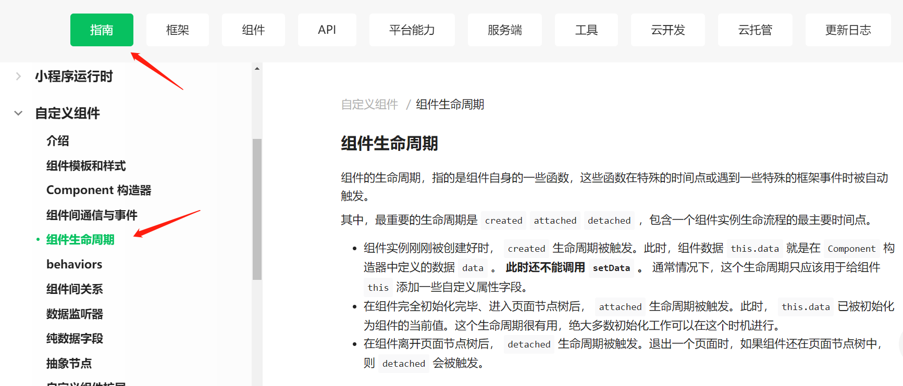
count.js
1 2 3 4 5 6 7 8 9 10 11 12 13 14 15 16 17 18 19 20 21 22 23 24 25 26 27 Component ({ data : { count : 5 }, lifetimes : { created ( console .log (this .data .count ) }, attached ( this .timeId = setInterval (()=> { if (this .data .count == 0 ){ this .triggerEvent ("removeTimeId" ) } this .setData ({ count : this .data .count -= 1 }) }, 1000 ) }, detached ( clearInterval (this .timeId ) } } })
路由跳转
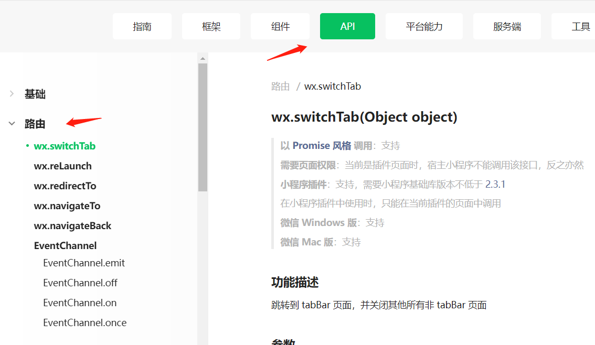
页面生命周期
pageLife.wxml
1 2 3 4 <view class ="container" > {{msg}} <button type ="primary" bindtap ="clickHandler" > 跳转</button > </view >
pageLife.js
1 2 3 4 5 6 7 8 9 10 11 12 13 14 15 16 17 18 19 20 21 22 23 24 25 26 27 28 29 30 31 32 33 34 35 36 37 38 39 40 41 42 43 44 45 46 47 48 49 50 51 52 Page ({ data : { msg : "若有诗书藏于心 岁月从不败美人" }, clickHandler ( wx.redirectTo ({ url : '/pages/07-shopcar/07-shopcar?id=2' , }) }, onLoad : function (options ) { console .log ("监听页面加载" ) }, onReady : function ( console .log ("监听页面初次渲染完成" ) }, onShow : function ( console .log ("监听页面显示" ) }, onHide : function ( console .log ("监听页面隐藏" ) }, onUnload : function ( console .log ("监听页面卸载" ) } })
获取用户信息
getUserInfo.wxml
1 2 3 4 5 6 7 8 9 10 11 12 13 14 15 16 17 18 19 20 21 22 23 24 25 <view class ="container" > <button type ="primary" style ="margin-top: 40rpx;" bindtap ="getUserInfo" wx:if ="{{!userInfo.avatarUrl}}" > 获取用户信息</button > <view class ="box" > <image src ="{{userInfo.avatarUrl}}" > </image > <view > {{userInfo.nickName}}</view > </view > <view > <button type ="primary" style ="margin-top: 40rpx;" open-type ="share" > 分享当前页</button > </view > </view >
getUserInfo.js
1 2 3 4 5 6 7 8 9 10 11 12 13 14 15 16 17 18 19 20 21 22 23 24 25 26 27 28 29 30 31 32 33 34 35 36 37 38 39 40 41 42 43 44 45 46 47 48 49 50 51 52 53 54 55 56 57 58 59 Page ({ data : { userInfo : {} }, getUserInfo (e ) { wx.getUserProfile ({ desc : 'desc' , lang : 'zh_CN' , success : (res ) => { this .setData ({ userInfo : res.userInfo }) wx.setStorageSync ('userInfo' , res.userInfo ) } }) }, onLoad : function (options ) { this .setData ({ userInfo : wx.getStorageSync ('userInfo' ) }) }, onPullDownRefresh : function ( console .log ('监听用户下拉动作' ) }, onReachBottom : function ( console .log ('上拉触底' ) }, onShareAppMessage : function (res ) { if (res.from == 'button' ){ console .log (111 ) }else if (res.from == 'menu' ){ console .log (222 ) } return { title : '好兄弟帮忙砍一刀' , path : "/pages/12-getUserInfo/12-getUserInfo" } } })
getUserInfo.wxss
1 2 3 4 5 6 7 8 9 10 11 12 13 14 15 16 17 .container { display : flex; flex-direction : column; align-items : center; } .box { margin-top : 100 rpx; display : flex; flex-direction : column; align-items : center; } .box image { width : 200 rpx; height : 200 rpx; border-radius : 100 rpx; margin-bottom : 40 rpx; }
获取用户openId
openId.wxml
1 2 3 4 <view class ="container" style ="padding-top: 40rpx;" > <button type ="primary" bindtap ="tapHandler" > 获取用户code</button > </view >
openId.js
1 2 3 4 5 6 7 8 9 10 11 12 13 14 15 16 17 18 19 20 21 22 23 24 25 26 27 28 29 30 31 32 33 34 35 36 37 38 39 40 41 42 43 44 45 46 47 48 49 50 Page ({ tapHandler ( wx.login ({ success (res ){ if (res.code ) { wx.request ({ url : 'http://localhost:3000/getOpenId' , data : {code : res.code }, success (res ){ wx.setStorageSync ('token' , res.data ) } }) } } }) }, })
小程序开放能力
小程序连接wifi
wxml
1 2 3 4 5 6 7 8 9 10 11 <view class ="page-head" > <text class ="page-head__title" > 微信连wifi</text > <text class ="page-head__desc" > </text > </view > <view class ="page-section" > <text class ="page-section__title" > 3.15</text > <view class ="btn-area" > <button bindtap ="startToConnect" type ="primary" > 连接</button > </view > </view >
js
1 2 3 4 5 6 7 import connectWifi from '../../lib/connect-wifi' Page ({ async startToConnect ( let res = await connectWifi () console .log ("startToConnect result" ,res) }, })
wifi-connect.js
1 2 3 4 5 6 7 8 9 10 11 12 13 14 15 16 17 18 19 20 21 22 23 24 25 26 27 28 29 30 31 32 33 34 35 36 37 38 39 40 41 42 43 44 45 46 47 48 49 50 51 52 53 54 55 56 57 58 59 60 61 62 63 64 65 66 67 68 69 70 71 72 73 74 75 76 77 78 79 80 81 82 83 84 85 86 87 88 89 90 91 92 93 94 95 96 97 98 99 100 101 102 103 104 async function connectWifi ( let ssid = '201' , pass = '123456789' let sysInfo = wx.getSystemInfoSync () let platform = sysInfo.platform console .log ("platform" , platform, sysInfo.system ); if (platform == "android" ) { let sysVersion = parseInt (sysInfo.system .substr (8 )) if (sysVersion < 6 ) { return "android版本低" } let res0 = await wx.wxp .getSetting ({ withSubscriptions : false , }).catch (err => console .log ("err" , err); return `运行错误：${err} ` }) if (res0 && !res0.authSetting ["scope.userLocation" ]) { let authRes = await wx.wxp .authorize ({ scope : 'scope.userLocation' }).catch (err => console .log ("err" , err); return `运行错误：${err} ` }) if (authRes && authRes.errMsg != "authorize:ok" ) { console .log ('地理授权失败' , authRes.errMsg ); return 'android地理授权失败' } } } else if (platform == "ios" ) { let sysVersion = parseInt (sysInfo.system .substr (4 )) if (sysVersion < 11 ) { return "ios版本低" } await wx.wxp .showModal ({ title : '请切到系统设置->wifi列表，等待wifi连接成功' , showCancel : false }).catch (err => console .log ("err" , err); return `运行错误：${err} ` }) } else { return "平台不支持" } await wx.wxp .startWifi ().catch (err => console .log ("err" , err); return `运行错误：${err} ` }) await wx.wxp .getWifiList ().catch (err => console .log ("err" , err); return `运行错误：${err} ` }) let res = await new Promise ((resolve, reject ) => { wx.onGetWifiList (res => resolve (res) }) }) if (!res.wifiList .length ) return "wifi列表为空" console .log ("res.wifiList" , res.wifiList ); var bssid = '' ; for (var i = 0 ; i < res.wifiList .length ; i++) { let wifi = res.wifiList [i] if (wifi.SSID == ssid) { bssid = wifi.BSSID break } } if (!bssid) return '未查询到目标wifi' let res1 = await wx.wxp .connectWifi ({ SSID : ssid, BSSID : bssid, password : pass }).catch (err => console .log ("err" , err); return `运行错误：${err} ` }) if (res1) { console .log ("wifi连接成功" ); return "connectWifi:ok" } return "未知错误" } export default connectWifi
app.json
1 2 3 4 5 "permission" : { "scope.userLocation" : { "desc" : "位置信息用途说明" } }
云开发
云开发提供的所有能力
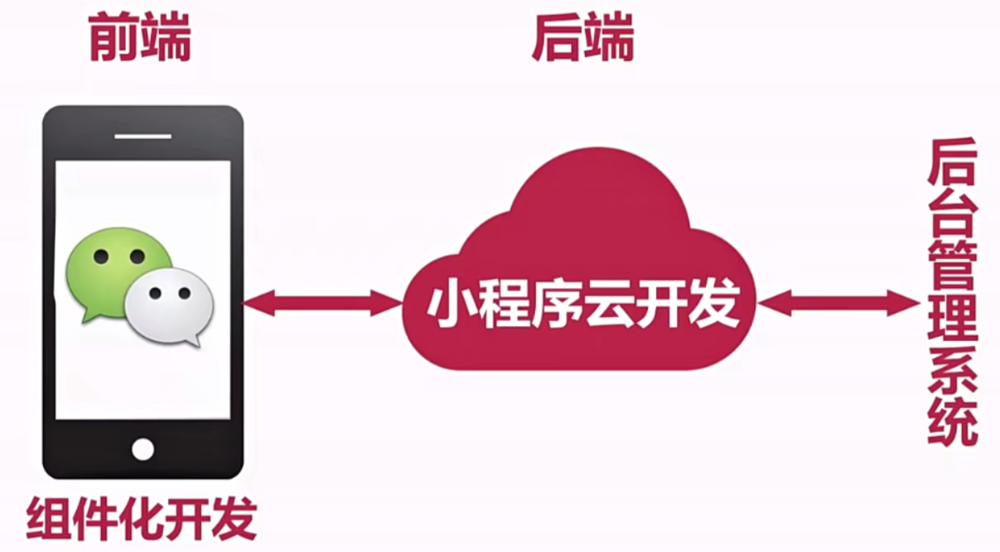
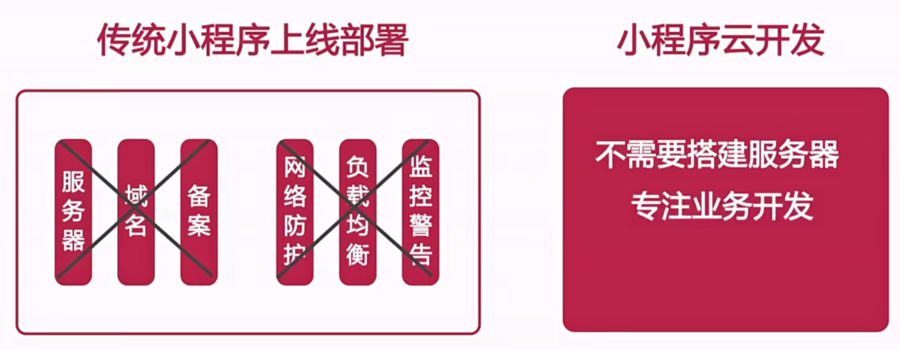
云开发和非云开的区别？
1：云开发是什么
小程序云开发是一种新的开发方式，它能够帮助开发者快速、便捷地开发小程序。
2：小程序云开发的优势
小程序云开发和非云开发有什么区别？这是一个很好的问题。
首先，我们来看看小程序云开发的优势。
总之，小程序云开发具有诸多优势，能够帮助我们快速、方便、安全地开发小程度。
3：非云开发的优势
首先，我们来看一下小程序云开发和非云开发的区别：
小程序云开发是一种全新的开发方式，它使用了云端的资源，能够更加轻松地开发出高质量的小程序。非云开发则是相对传统的开发方式，使用本地的资源进行开发。
下面我们来看看小程序云开发和非云开发各自的优势：
小程序云开发
使用了云端的资源，能够更加轻松地开发出高质量的小程序。
在运行时也能够得到更好的性能。因为它不会像本地小程序那样占用过多的内存和CPU资源。
代码也更加容易维护和理解。因为代码是分布在不同的文件中，并且采用了标准化的代码风格。
对于新手来说，学习小程序云开发也相对容易一些。因为相对而言，它的代码量要少很多。
非云开发
相对传统的开发方式，使用本地的资源进行开发。
在运行时不会占用过多的内存和CPU资源（如果代码写得好的话)。
代码也相对容易理解和修改。因为代码是集中在一个文件中，并且采用了标准化的代码风格。
总结：
传统开发中 ， 开发者不仅需要关注前端的页面展示， 还需要搭建后端的数据库， 购买服务器
和域名，如果是境内服务器， 还需要备案等等。
小程序上线后， 开发者需要定期进行数据库维护、网络安全、负载均衡等工作
云开发中 ，开发者只需要关注前端的页面展示， 后端的服务器、维护、安全处理等工作全部由腾讯云代替我们完成，方便了很多！